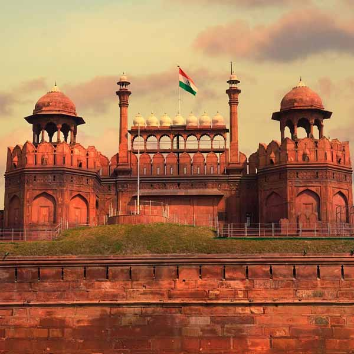
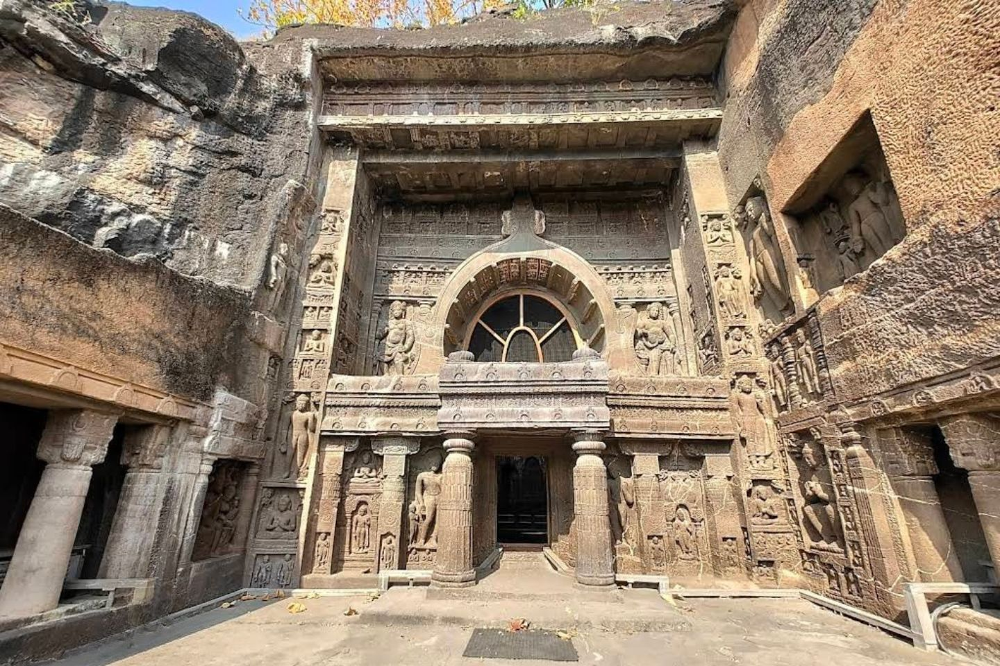
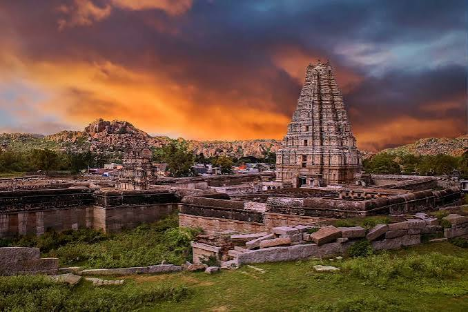
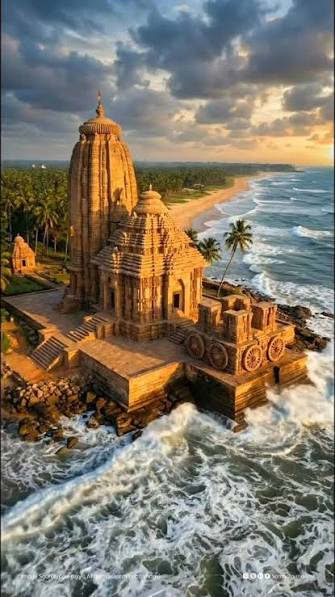
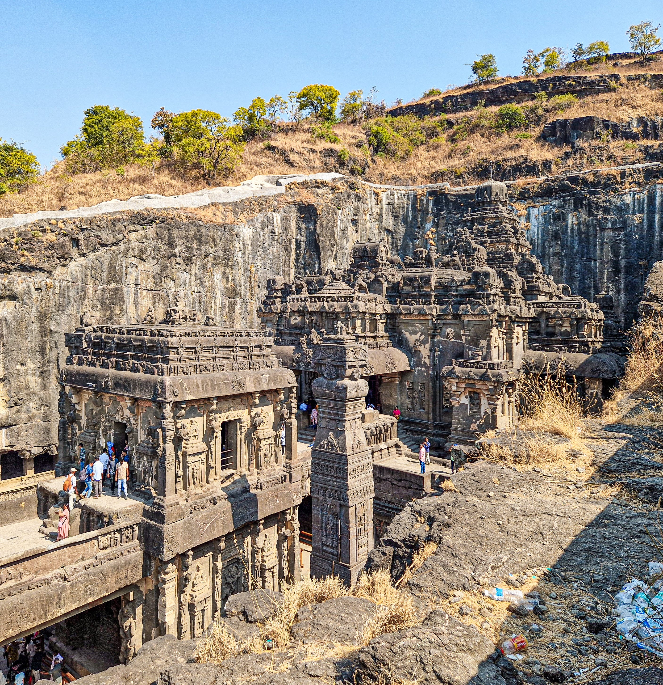

01

Taj Mahal
Located in Agra, the Taj Mahal is a magnificent monument known for its beautiful architecture and historical significance.
Explore More →DISCOVER INDIA
Explore India's magnificent monuments, ancient architecture and timeless cultural treasures.
INDIAN HERITAGE
India is home to remarkable historical monuments, ancient temples, caves, forts and architectural wonders. These heritage sites reflect the rich history, art and traditions of our country.
Located in Agra, the Taj Mahal is a magnificent monument known for its beautiful architecture and historical significance.
Explore More →
The Red Fort in Delhi is an important historical monument representing the grandeur of Mughal architecture.
Explore More →
The Ajanta Caves in Maharashtra are famous for their ancient Buddhist paintings, sculptures and rock-cut architecture.
Explore More →
Hampi is known for its magnificent temples, monuments and ruins of the historic Vijayanagara Empire.
Explore More →
The Konark Sun Temple in Odisha is famous for its beautiful stone carvings and remarkable architecture.
Explore More →
The Ellora Caves represent Buddhist, Hindu and Jain traditions through extraordinary rock-cut architecture.
Explore More →Our heritage connects the stories of our past with the dreams of our future.
❞